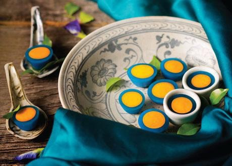

วัตถุดิบ
1.แป้งข้าวเจ้า 60 กรัม
2.แป้งท้าวยายม่อม 1 ½ ช้อนโต๊ะ
3.น้ำ 70 กรัม
4.น้ำตาลทราย 40 กรัม
5.น้ำดอกอัญชันต้ม 170 กรัม
ส่วนผสมสังขยา
1.กะทิ 30 กรัม
2.น้ำตาลมะพร้าว 14 กรัม
3.ไข่แดง 1 ฟอง
4.เกลือ ¼ ช้อนโต๊ะ
วิธีทำ
1.นำแป้งข้าวเจ้า แป้งท้าวยายม่อม และน้ำตาลทราย มานวดกับน้ำทีละน้อยให้เข้ากัน นานอย่างน้อย 20 นาที
2.นำน้ำดอกอัญชันมาผสมกับส่วนผสมแป้งที่เตรียมไว้ คนให้เข้ากันจนเนื้อเนียนละเอียด จากนั้นหยอดลงในถ้วยตะไลแล้วนำไปนึ่ง
3.ทำสังขยาโดยนำส่วนผสมทั้งหมดไปตั้งไฟ แล้วกวนให้เข้ากัน จากนั้นค่อยๆ นำไปกรองใส่ถ้วย
4.เมื่อนึ่งเนื้อขนมเสร็จแล้ว ให้นำสังขยามาหยอดตรงกลางของขนม